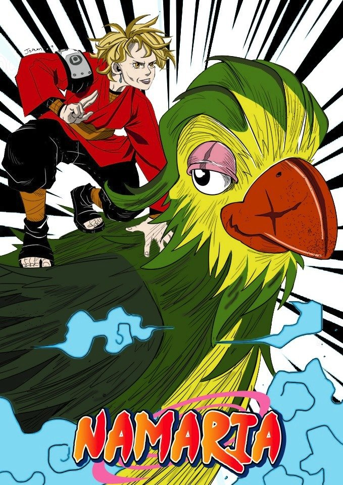

A apresentadora Ana Maria Braga, que chamou atenção dos fãs de anime na semana passada por ter começado seu programa ao
som de uma abertura icônica de Naruto, compartilhou uma arte de um fã em que ela se torna um ninja no estilo da
franquia.
Como você pode conferir abaixo, a ninja, que passou a se chamar Namaria, está acompanhada de uma "invocação": Louro José
(que traz, no bico, uma cicatriz semelhante à de Iruka Umino).
